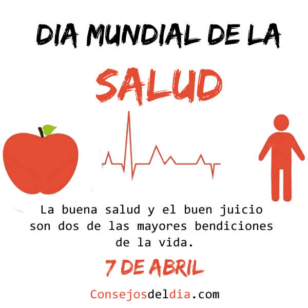

¿Qué es lo que NO incluye la cobertura sanitaria universal?
La mitad de la población mundial todavía no tiene acceso a los servicios de salud que precisa
En la misma línea, la médica endocrinóloga María Alejandra Rodríguez Zía (MN 70.787) observó que "la cobertura sanitaria universal se logra cuando existe una firme determinación política. Ello significa garantizar que todas las personas, en cualquier lugar, puedan tener acceso a servicios de salud esenciales y de calidad sin tener que pasar apuros económicos".
"El 50% de la población mundial no recibe los servicios esenciales pero obviamente para un médico es muy difícil intervenir en semejante desastre. Las medidas políticas y socioeconómicas son las que tienen que prevalecer para paliar las necesidades que llevan a tanta población a padecer enfermedades", ahondó Rodríguez Zía, quien consideró que los médicos "son recetadores de medicamentos de enfermedades crónicas y no previenen ninguna de ellas".
¿Por qué es importante la cobertura sanitaria universal?
Los países que invierten en la CSU realizan una importante inversión en su capital humano. En los últimos decenios, la CSU surgió como una estrategia clave para avanzar hacia la consecución de otros objetivos relacionados con la salud y de desarrollo más amplios.
El acceso a cuidados esenciales y de calidad y a la protección financiera no solo mejora la salud de las personas y su esperanza de vida, sino que también protege a los países de las epidemias, reduce la pobreza y el riesgo de padecer hambre, crea empleos, impulsa el crecimiento económico y promueve la igualdad de género.
Algunos países ya lograron importantes avances hacia la cobertura sanitaria universal. Aun así, la mitad de la población mundial todavía no puede acceder a los servicios de salud que precisa. Si los países quieren alcanzar la meta de los ODS, mil millones más de personas deberán beneficiarse de la CSU de aquí a 2023.



 1
1 4
4 7
7